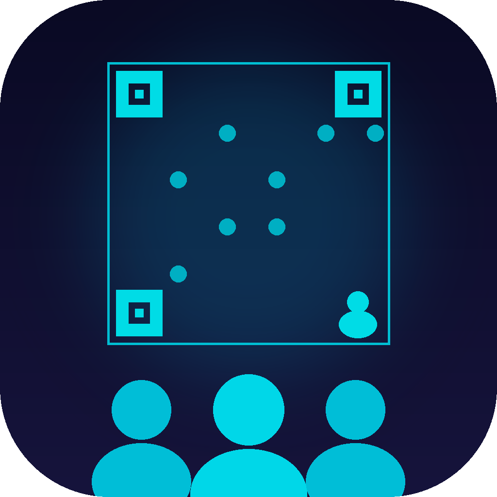

Ghalam.net
- Ghalam.net Apps Pagaes -

CrowdNotes
Collaborative event notes & attendees tool
CrowdNotes is a lightweight collaboration app designed for recruiting or networking events. Event staff can quickly look up attendees and share notes about conversations during the event.
The app uses an iCloud account to create and manage events quickly. Team members can search for attendees or scan a QR code assigned during registration and add notes in real time.
CrowdNotes is simple and affordable.
Privacy information:
View our Privacy Policy
Support information:
Support
Terms of Service information:
ToS